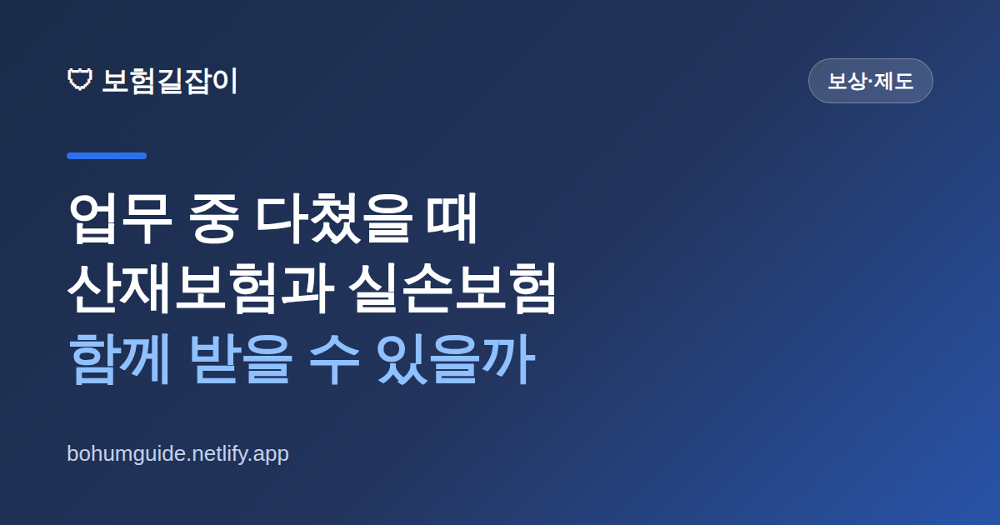

산재보험과 실손보험, 업무 중 다쳤을 때 함께 받을 수 있을까
일하다 다치면 머릿속이 복잡해집니다. "산재로 처리해야 하나, 내 실손보험으로 병원비를 받아야 하나, 둘 다 되는 건가?" 순서를 잘못 잡으면 받을 수 있는 보상을 놓치거나 나중에 돌려줘야 하는 상황이 생깁니다. 헷갈리는 원칙을 실전 기준으로 정리했습니다.

✍️ 편집자 참고: 본 글은 초안입니다. 산재 인정 기준·급여 항목·건강보험 병행 여부는 사안마다 다르고 제도 개정으로 바뀌니, 게시 전 근로복지공단 최신 기준으로 검수해 주세요.
업무 중 부상은 일반 사고와 처리 방식이 다릅니다. 핵심은 공적 제도인 산재보험이 우선이고, 민간 보험은 그 성격에 따라 중복해서 받을 수 있는 것과 없는 것이 나뉜다는 점입니다. 이 큰 틀만 잡아 두면 병원 접수 단계에서부터 실수를 줄일 수 있습니다.
업무 중 부상은 '산재 우선'이 기본 원칙
일을 하다가, 또는 업무와 관련해 다치거나 병을 얻으면 업무상 재해(산재)에 해당할 수 있습니다. 이때는 개인 건강보험(실손)이나 국민건강보험으로 먼저 처리하기보다 산재보험 처리를 우선 검토하는 것이 원칙입니다. 산재로 인정되면 치료에 드는 요양급여, 일하지 못한 기간의 휴업급여 등 공적 보상을 받을 수 있기 때문입니다.
실무에서 자주 생기는 오해가 "일단 국민건강보험으로 접수하고 나중에 산재로 바꾸면 되겠지"입니다. 그러나 업무상 재해는 원칙적으로 건강보험이 아니라 산재보험이 부담하는 영역이라, 건강보험으로 처리했다가 산재로 인정되면 공단 사이에 비용을 정산하는 번거로운 과정이 뒤따를 수 있습니다. 그래서 다친 경위가 업무와 관련 있다면 병원에 "산재 가능성이 있다"는 점을 처음부터 알리고, 회사·근로복지공단과 산재 신청을 함께 진행하는 편이 깔끔합니다.
그럼 내 실손·상해보험은 어떻게 될까
여기서 많은 분이 궁금해하는 부분이 "산재로 처리하면 내가 따로 든 민간 보험은 못 받는 것 아니냐"입니다. 결론부터 말하면 보험의 성격에 따라 다릅니다. 크게 '실제 쓴 비용을 보상하는 실손형'과 '정해진 금액을 주는 정액형'으로 나눠 생각하면 이해가 쉽습니다.
| 구분 | 성격 | 산재와의 관계(일반적) |
|---|---|---|
| 실손의료보험 | 실제 부담한 의료비 보상 | 산재로 처리된 부분은 이미 보상돼 실손 중복 지급이 제한될 수 있음(본인부담·비급여 등 산재로 안 메워진 부분 위주로 검토) |
| 상해·질병 진단비 등 정액형 | 사고·진단 시 약정액 지급 | 산재를 받았어도 별도로 지급되는 것이 일반적(약관 조건 충족 시) |
| 후유장해·사망 담보 | 장해·사망 시 약정액 지급 | 산재 보상과 별개로 약관에 따라 지급 검토 |
즉 실손보험은 '실제 비용'을 메우는 구조라, 산재보험이 그 비용을 이미 부담했다면 같은 부분을 실손에서 또 주지는 않는 것이 원칙입니다. 다만 산재로 전부 처리되지 않는 본인부담분이나 일부 비급여가 있다면 그 부분은 실손 청구 대상이 될 수 있으니, 자세한 내용은 급여와 비급여 차이 글과 함께 약관을 확인하는 것이 좋습니다. 반대로 정액형(진단비·수술비·후유장해 등)은 실제 비용과 무관하게 정해진 돈을 주는 구조여서, 산재를 받았더라도 약관 조건을 충족하면 별도로 받을 수 있는 경우가 많습니다.
핵심 정리
실손형은 '중복 보상 제한', 정액형은 '별도 지급 가능'이 큰 방향입니다. 그래서 산재 처리를 한다고 내가 든 진단비·후유장해 보험까지 포기할 필요는 없습니다. 내 증권에 어떤 담보가 있는지부터 확인하는 것이 첫걸음입니다.
회사·제3자 합의금과 겹칠 때 주의할 점
업무 중 부상이라도 다친 원인에 회사나 제3자의 책임이 있으면 산재 보상과 별도로 손해배상(합의금) 문제가 나올 수 있습니다. 이때 주의할 점은, 산재로 받은 보상과 합의금 사이에서 같은 손해를 이중으로 메우는 부분은 조정(공제)될 수 있다는 것입니다. 예컨대 치료비나 일하지 못한 기간의 손실처럼 산재에서 이미 보전된 항목을 합의금에서 또 받으면, 그만큼 조정되는 구조입니다.
그래서 회사나 상대방과 합의서를 쓸 때는 "이 합의가 산재 보상과 어떤 관계인지", "위자료 등 산재로 보전되지 않는 부분이 포함됐는지"를 반드시 문서로 확인해야 합니다. 급하게 합의부터 하면 받을 수 있었던 산재 급여나 민간 보험금까지 영향을 받을 수 있으니, 금액이 크거나 후유장해가 남는 사안이라면 서두르지 말고 전문가 상담을 거치는 것이 안전합니다.
실전 처리 순서 & 요약
정리하면, 업무 중 다쳤을 때는 다음 순서로 접근하면 헷갈리지 않습니다. 첫째, 병원에 업무상 부상임을 알리고 산재 처리를 우선 검토합니다. 둘째, 산재 신청과 병행해 내 민간 보험 증권의 담보(실손·진단비·후유장해 등)를 확인합니다. 셋째, 산재로 메워지지 않는 본인부담·비급여는 실손으로, 진단·장해 등 정액 담보는 별도로 청구를 검토합니다. 넷째, 합의금이 오가는 사안이면 이중 보상 공제 여부를 확인한 뒤 신중히 합의합니다.
- 업무 중 부상은 건강보험보다 산재 처리 우선 검토
- 실손형은 중복 지급 제한, 정액형(진단비·후유장해)은 별도 지급이 원칙
- 산재로 안 메워진 본인부담·비급여는 실손 청구 대상인지 약관 확인
- 합의금은 산재 보상과의 공제·조정을 확인하고 신중히
- 보험금 청구엔 기한이 있으니 청구권 소멸시효도 함께 점검
참고할 수 있는 공신력 있는 자료
본 정보는 일반적인 안내이며, 산재 인정 여부·급여 항목·보험금 지급은 근로복지공단과 각 보험사 약관을 통해 반드시 확인하시기 바랍니다.